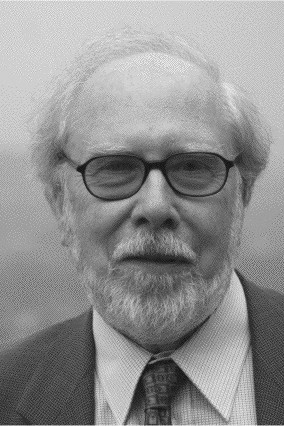

|  |
1984 год Niklaus E. Wirth (1934) «За разработку нескольких инновационных языков программирования Euler, Alagol-W, Modula и Pascal. Pascal приобрёл большую значимость в педагогике и предоставил основу для последующих исследований компьютерных языков, систем и архитектур» |
Страна: Швейцария
Образование: Доктор философии в области электротехники, Калифорнийский университет (Беркли), 1963
О лауреате
Карьера Wirth началась с создания двух языков: Euler (основан на его диссертации) и PL360 (для IBM System/360). Эти работы открыли новые горизонты в формальном разделении синтаксиса и семантики и тщательной разработке дизайна языка для эффективной реализации с использованием конкретных методов парсинга. Оба языка появились под влиянием Algol - Wirth входил в группу разработки этого языка, однако, в 1966 году группа проголосовала против его предложения сделать следующую версию основанной на его языке Euler. Он покинул группу и совместно с Hoare реализовал неофициальную версию – Algol-W, на основе которого Wirth создал свою самую значимую работу – язык Pascal. В 1976 году он начал работу над графической рабочей станцией Lilith, которая использовала новый язык Modula-2. Ещё через несколько лет он возглавил разработку новой рабочей станции Ceres, её ОС, и объектно-ориентированного языка Oberon. Идеи компиляции в промежуточный код в Pascal и совмещения системы программирования со сборщиком мусора в Oberon позже были использованы разработчиками Java и .Net во второй половине 1990-х годов.
Ключевые слова: Algol-W, Euler, Pascal, Modula, Modula-2, Oberon, Oberon-2, Oberon-07, Oberon System
Краткая библиография
| 1. |
Wirth, N. and C. A. R. Hoare, “A Contribution to the Development of ALGOL,” Communications of the ACM Vol. 9, (June 1966), pp. 413-432. Описывает язык Algol-W, который основан на проекте Wirth последователя Algol 60, но не был принят. |
| 2. |
Wirth, N., Systematic Programming, Prentice Hall, Englewood Cliffs, 1973. Взгляд Wirth на структурное программирование. Он был непосредственно связан с практикой и менее математичен, чем версии его коллег, и потому имел большее влияние на педагогику. |
| 3. |
Wirth, N. and Kathleen Jensen, PASCAL - User Manual and Report, Springer-Verlag, 1974. Здесь соединены учебник по Pascal для опытных программистов со ссылками на разработчиков, которые полностью описали язык. |
| 4. |
Wirth, N., Algorithms + Data Structures = Programs, Prentice-Hall, Inc., 1975. Как свидетельствует включение в Паскаль сложных, определяемых пользователем типов данных, Wirth считал, что структуры данных так же фундаментальны, и что выбор алгоритма и дизайн структуры данных связаны по своей природе. |
| 5. |
Wirth, N., and Jürg Gutknecht, Project Oberon, Addison-Wesley, 1992. Оберон стал кульминацией стремления Wirth делать код поразительно ясным и экономичным. В этой книге не только описываются системы (включая операционную систему и компилятор), но также публикуется весь их исходный код. |